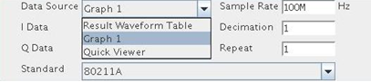

This task describes how to specify waveform and standard in the demodulation
tool.
Before you begin
Make sure that signal analyzer and the demodulation user interface is
open.
Procedure
To specify waveform to be demodulated, use the Data Source combo-box and the I/Q Data
combo-box on the top of the user interface as shown below.

Data Source specifies which graph (or Result Waveform
Table) in the Signal Analyzer contains the waveform to be demodulated. The Data
Source combo-box always contains Result Waveform Table as the first
item and all open graphs (excluding Smith charts). When a new graph is opened after opening
the Demodulation dialog, this new graph will be automatically added to the combo-box. When
closing a graph, the corresponding item will be removed from the combo-box. This combo-box
allows you to switch data source flexibly among opening graphs as well as Result
Waveform Table without closing and reopening the Demodulation dialog. This way
you can work with multiple waveforms efficiently.
I/Q Data combo-boxes further specify the data out of the selected
data source. Depending on the selected data source, a valid I/Q data could be a trace in a
graph or a waveform presented in the Result Waveform Table. In case
there is no trace in the selected graph, No Trace will be displayed.
In case the selected data source is a Result Waveform Table but the
table is empty, No Waveform will be displayed. When a trace (waveform)
is added or deleted from the selected data source, the I/Q Data
combo-box will be refreshed automatically. By default the first trace in a graph is set as I
data and the second trace as Q data. In case of Result Waveform Table
the first row is set as I data and second row as Q data. I and Q data can also be set to the
same row if this row represents a complex waveform.
The Sample Rate in Hz of the selected I data trace (waveform) is
displayed on the top-right of the dialog. By changing the I data selection this field is
automatically updated. Normally there is no need to edit the value manually unless you think
the auto-populated sample rate is wrong. When No Trace or
No Waveform is shown in I Data combo-box the
sample rate will be set to -999.
You can also pre-process the waveform before demodulation by specifying the decimation
factor and the repetition factor. The default values are one.
The modulation standard applied to the waveform is specified by the
Standard combo-box. By changing the standard, all standard specific
information (input parameters, result parameters, graph options) will be refreshed
automatically. When the Parameter List Configuration dialog (Configuring parameter list) is
opened, the parameter list on that dialog is refreshed as well. This combo-box allows you to
flexibly play with different standards for example, EDGE_FLEX and GSM_EDGE_EVO) on the save
waveform.
You can also pre-process the waveform before demodulation by specifying the decimation
factor and the repetition factor. The default values are one. The repetition factor can be a
double number in order to have a segment of the waveform.